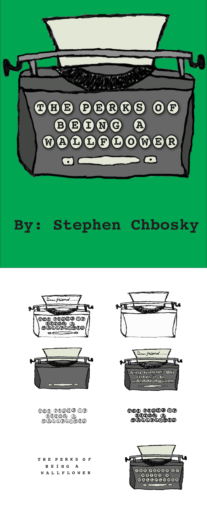

I define my self as a Web Developer and a UX Designer. However, I am a very visual person. In the past I've done a fair share of graphical work. I wanted to share that in one communal location.
Most of my graphical work is computerized vector art. Its sleek, slim and minimalistic. Its simple and never takes its self too seriously.
Media Query - Illustrator
The Hand of Man - Illustrator
North - Processing Vector Animation
Book Redesign - Hand Drawn/Illustrator
